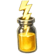

Hi
Player
0
Open in Telegram
Log in to secure your $MH and unlock every feature.
›
MINI HUB GAMES
Play the games, earn $MH, and be part of our ecosystem.
Günlük Ödüller
Davet Et
0
Liderlik Tablosu

Enerji
12/12
Günlük Görevler
Yarın yenilenir
Games
✕
Ayarlar
Dil
Sunucu
Sürüm
Version 0.1
Promosyon kodu
Kullan
Kod kayıtları
✕
Cüzdan
0
$MH
g
0
Gram
✕
Günlük Seri
Günlük Çark
✕
⚡
Enerji
🎬
Reklam izle
Yakında
⭐
✕
✕
Arkadaşını Davet Et
Davet Ettiklerin